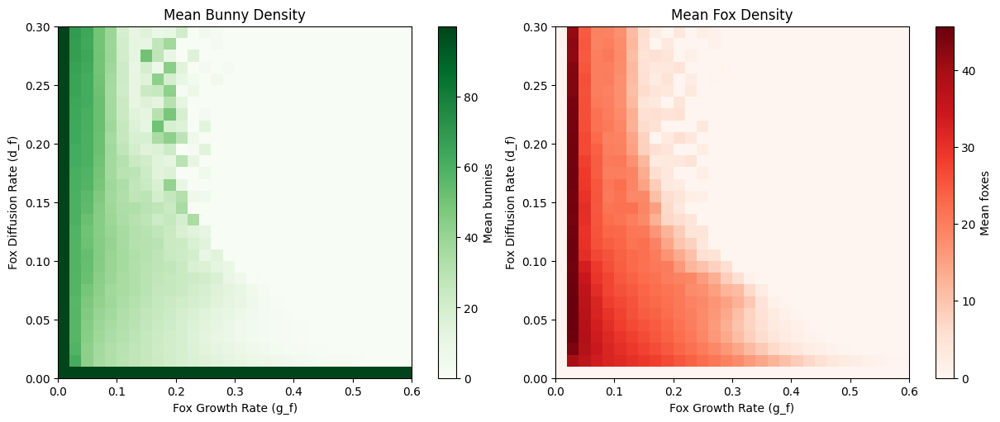

Abstract
I simulated a spatial predator–prey ecosystem to explore how local growth, hunting, mortality, and movement produce coexistence or collapse. Parameter sweeps reveal regimes that are difficult to infer from a single trajectory. Comparing the simulation with mean-field relationships helps distinguish population-level balance from the spatial processes that sustain it.
Let local interactions produce the pattern
The model represents bunny and fox densities on a 200 × 200 toroidal grid over 1,000 time steps. Logistic prey growth, predation, reproduction, mortality, and diffusion update each cell. These are real-valued densities, not individually tracked animals.
Bunnies on the left, foxes on the right

Vary the rules instead of trusting one run
I varied predator growth, consumption, and relative mobility to examine coexistence and extinction regions. The heatmaps describe outcomes under the tested parameters and time horizon. They are not estimates of real ecosystems’ extinction probabilities.
Check what the average leaves out
The report derives mean-field relationships and compares simulated growth with predation in a stationary regime. Agreement in an average balance does not mean the local densities are uniform. Spatial patches and oscillations remain important to interpreting the model.
Explore the work
The original materials retain the calculations, assumptions, and supporting discussion behind this overview.